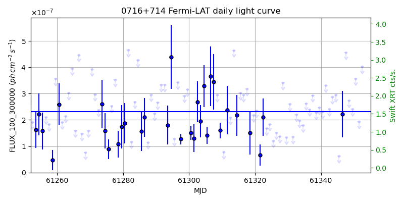
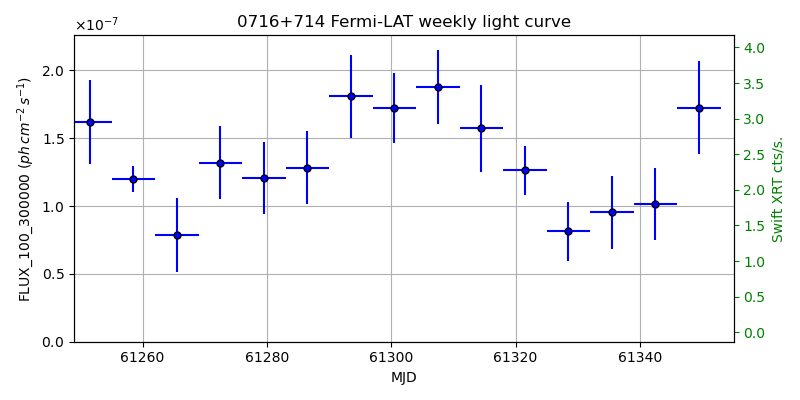
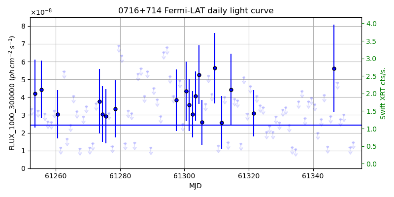
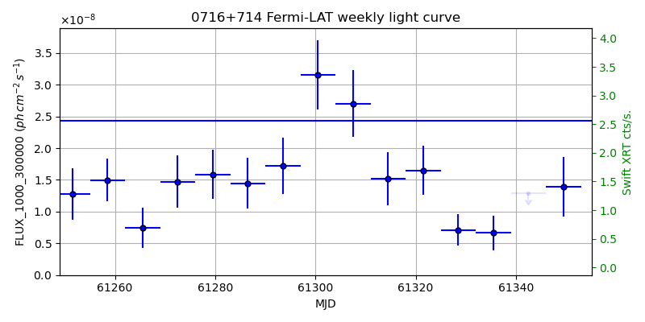

LAT Lightcurve site: https://fermi.gsfc.nasa.gov/ssc/data/access/lat/msl_lc/source/0716p714
Swift site: https://www.swift.psu.edu/monitoring/source.php?source=S50716+714
NED: Query
Time of last update of this page: UT: 2026-11-13 16:18 (MJD: 61357.680)
| Property | Value |
|---|---|
| R.A. | 7:21:43.20 |
| Dec. | 71:21:00.0 |
| z | 0.310 |
| 3FGL SpectrumType | LogParabola |
| 3FGL PL Index | |
| 3FGL Flux_100_300000 | 2.31e-07 1 / (s cm2) |
| 3FGL Flux_1000_300000 | 2.44e-08 1 / (s cm2) |
| 3FGL Flux >200 GeV | 6.00e-11 1 / (s cm2) |
| 3FGL Extrap. Crab >200 GeV | 0.25 |
| 3FGL Flux After EBL Absorption >200GeV | 1.88e-11 1 / (s cm2) |
| 3FGL EBL Crab Fraction >200GeV | 0.08 |

| MJD | dMJD | Flux | dFlux | Frac3FGL | FracCrab>200GeV | EBLFracCrab>200GeV |
|---|---|---|---|---|---|---|
| 61348.50 | 0.50 | 2.74e-07 | 0.00e+00 | 0.00 | 0.00 | 0.00 |
| 61349.50 | 0.50 | 2.41e-07 | 0.00e+00 | 0.00 | 0.00 | 0.00 |
| 61350.50 | 0.50 | 3.57e-07 | 0.00e+00 | 0.00 | 0.00 | 0.00 |
| 61351.50 | 0.50 | 1.93e-07 | 0.00e+00 | 0.00 | 0.00 | 0.00 |
| 61352.50 | 0.50 | 4.03e-07 | 0.00e+00 | 0.00 | 0.00 | 0.00 |

| MJD | dMJD | Flux | dFlux | Frac3FGL | FracCrab>200GeV | EBLFracCrab>200GeV |
|---|---|---|---|---|---|---|
| 61321.50 | 3.50 | 1.26e-07 | 1.79e-08 | 0.55 | 0.14 | 0.04 |
| 61328.50 | 3.50 | 8.14e-08 | 2.18e-08 | 0.35 | 0.09 | 0.03 |
| 61335.50 | 3.50 | 9.54e-08 | 2.71e-08 | 0.41 | 0.11 | 0.03 |
| 61342.50 | 3.50 | 1.01e-07 | 2.67e-08 | 0.44 | 0.11 | 0.03 |
| 61349.50 | 3.50 | 1.73e-07 | 3.44e-08 | 0.75 | 0.19 | 0.06 |

| MJD | dMJD | Flux | dFlux | Frac3FGL | FracCrab>200GeV | EBLFracCrab>200GeV |
|---|---|---|---|---|---|---|
| 61348.50 | 0.50 | 2.75e-08 | 0.00e+00 | 0.00 | 0.00 | 0.00 |
| 61349.50 | 0.50 | 3.01e-08 | 0.00e+00 | 0.00 | 0.00 | 0.00 |
| 61350.50 | 0.50 | -1.00e+00 | 0.00e+00 | 0.00 | 0.00 | 0.00 |
| 61351.50 | 0.50 | 1.18e-08 | 0.00e+00 | 0.00 | 0.00 | 0.00 |
| 61352.50 | 0.50 | 1.47e-08 | 0.00e+00 | 0.00 | 0.00 | 0.00 |

| MJD | dMJD | Flux | dFlux | Frac3FGL | FracCrab>200GeV | EBLFracCrab>200GeV |
|---|---|---|---|---|---|---|
| 61321.50 | 3.50 | 1.65e-08 | 3.91e-09 | 0.68 | 0.17 | 0.05 |
| 61328.50 | 3.50 | 7.12e-09 | 2.47e-09 | 0.29 | 0.07 | 0.02 |
| 61335.50 | 3.50 | 6.64e-09 | 2.77e-09 | 0.27 | 0.07 | 0.02 |
| 61342.50 | 3.50 | 1.29e-08 | 0.00e+00 | 0.00 | 0.00 | 0.00 |
| 61349.50 | 3.50 | 1.39e-08 | 4.73e-09 | 0.57 | 0.15 | 0.05 |
--------------------------------------------------------- Using user-supplied coords: 7:21:43.20 71:21:00.0 2000 --------------------------------------------------------- FLWO UT night of: 2026-11-14 Local Sid. @ Midnight: 03:09 Sunset (-15.0) (local, UT): 18:35 01:35 Sunrise (-15.0) (local, UT): 05:42 12:42 Moonrise (local, UT): Moonset (local, UT): 20:50 03:50 Moon phase: 0.22 --------------------------------------------------------- AzTime LSID UT Obj_el Obj_az Mn_el Mn_az Sep. --------------------------------------------------------- 18:35 21:44 01:35 15.9 11.0 20.1 218.2 135.2 19:05 22:14 02:05 17.2 13.1 16.0 223.7 135.1 19:35 22:44 02:35 18.8 15.0 11.6 228.6 135.1 20:05 23:14 03:05 20.5 16.8 6.9 233.2 135.0 20:35 23:44 03:35 22.5 18.3 2.0 237.3 134.9 21:05 00:14 04:05 24.5 19.6 -2.2 241.2 134.8 21:35 00:44 04:35 26.8 20.7 -9.0 244.8 134.8 22:05 01:14 05:05 29.1 21.5 -14.6 248.2 134.7 22:35 01:44 05:35 31.4 22.0 -20.4 251.4 134.6 23:05 02:14 06:05 33.8 22.1 -26.2 254.5 134.5 23:35 02:44 06:35 36.2 21.9 -32.1 257.5 134.4 00:05 03:14 07:05 38.6 21.3 -38.1 260.6 134.4 00:35 03:45 07:35 40.9 20.3 -44.2 263.8 134.3 01:05 04:15 08:05 43.0 18.8 -50.2 267.1 134.2 01:35 04:45 08:35 45.0 16.9 -56.3 270.9 134.1 02:05 05:15 09:05 46.7 14.5 -62.4 275.3 134.1 02:35 05:45 09:35 48.2 11.7 -68.4 281.1 134.0 03:05 06:15 10:05 49.3 8.4 -74.2 289.9 134.0 03:35 06:45 10:35 50.0 4.9 -79.6 306.2 133.9 04:05 07:15 11:05 50.4 1.2 -83.2 343.5 133.8 04:35 07:45 11:35 50.3 357.4 -82.1 35.1 133.8 05:05 08:15 12:05 49.8 353.7 -77.4 61.2 133.7 05:35 08:45 12:35 48.9 350.3 -71.8 73.4 133.7 05:42 08:52 12:42 48.7 349.6 -70.5 75.2 133.7 --------------------------------------------------------- Source never above horizon of 55.0 deg. Dark hours >55 deg.: 0.00